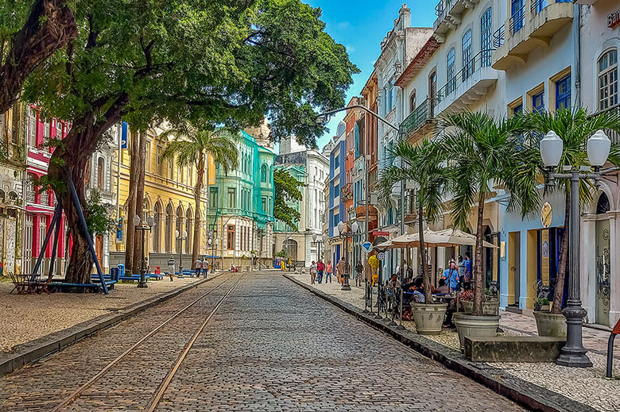

Dois dos principais pontos turisticos de Recife
Praia de Boa Viagem

A Praia de Boa Viagem é uma das praias mais famosas de Recife. Ela se estende por vários quilômetros ao longo da costa e é conhecida por suas águas mornas e claras. É um ótimo lugar para relaxar, nadar e desfrutar do sol.
Recife Antigo
O Recife Antigo, localizado no Bairro do Recife, é o coração histórico e cultural da cidade. Com suas ruas de paralelepípedos, casarões coloniais e igrejas antigas, é um lugar encantador para explorar. Além disso, você encontrará muitos bares, restaurantes, lojas de artesanato e museus.